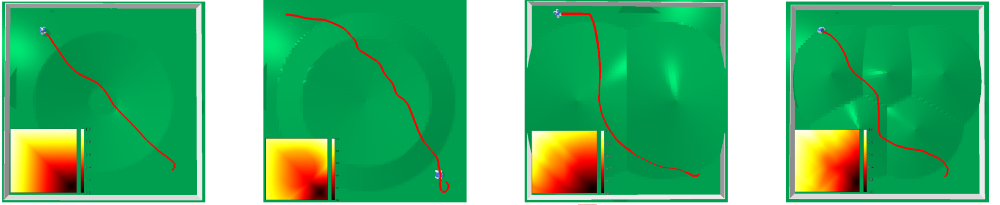
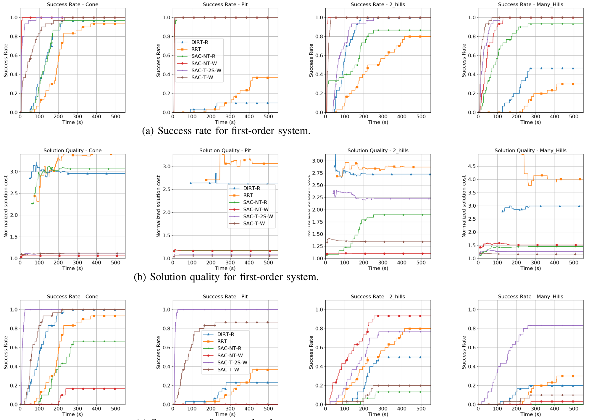

Experimental Evaluation
The proposed framework was evaluated using physically simulated models of a four-wheeled Segway RMP 440 LE operating over a variety of uneven terrains. Both first-order and second-order dynamics were considered.
Experiments evaluated the performance of terrain-aware controllers and wavefront-based planning across environments containing hills, pits, multiple hills, and more complex terrain features.
Terrain Environments

Evaluation Metrics

Key Results
Learned controllers consistently outperformed traditional sampling-based planning approaches in both success rate and solution quality. Incorporating a terrain-aware wavefront enabled planners to find solutions more consistently and efficiently than approaches using random local goals.
The terrain-aware controller was particularly effective in difficult environments where terrain features significantly influenced vehicle motion. An incremental training strategy, in which the controller was first trained on flat terrain and then exposed to sloped environments, provided particularly strong performance.
For more challenging second-order systems, terrain-aware methods substantially improved solution quality and planning success compared with traditional baselines.